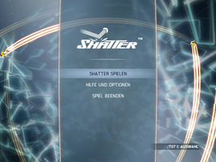
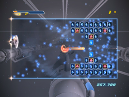
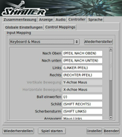

Shatter
Dieser Artikel wurde für die folgenden Ubuntu-Versionen getestet:
Ubuntu 14.04 Trusty Tahr
Zum Verständnis dieses Artikels sind folgende Seiten hilfreich:
Shatter  ist ein kommerzieller Breakout-Klon. Ziel ist es, mit dem Paddle den Ball so zu steuern, dass die Blöcke zerstört werden. Verfehlt man den Ball, verliert man ein Leben. Power-Ups und die Möglichkeit die Flugbahn des Balles zu beeinflussen sorgen für Spielspaß.
ist ein kommerzieller Breakout-Klon. Ziel ist es, mit dem Paddle den Ball so zu steuern, dass die Blöcke zerstört werden. Verfehlt man den Ball, verliert man ein Leben. Power-Ups und die Möglichkeit die Flugbahn des Balles zu beeinflussen sorgen für Spielspaß.
Neben Maus und Tastatur werden Controller unterstützt.
|  |  |
| Hauptmenü | Spielszene |
Installation¶
Humble Bundle¶
Den Installer shatter-linux-VERSION.sh aus der Aktion The Humble Indie Bundle 6 ausführbar machen [1] und installieren [2]:
./shatter-linux-VERSION.sh
Über "Anwendungen -> Spiele -> Shatter" kann das Spiel gestartet werden.
Hinweis:
Nach dem ersten Start legt das Spiel im Homeverzeichnis den versteckten Ordner ~/.sidhe/Shatter an.
Ubuntu Software-Center¶
Shatter kann über das Ubuntu Software-Center erworben werden. Updates werden kurze Zeit nach dem Erscheinen zur Verfügung gestellt.
Hinweis:
Sofern man das Spiel über das Humble Bundle erworben hat, kann man über die Schaltfläche "Download for Ubuntu" auf der Seite die Software einlösen. Nachdem man die Daten für den eigenen Zugang auf ubuntu.com eingegeben hat, wird das ausgewählte Spiel zur Paketquelle hinzugefügt und kann bequem per Software-Center installiert werden. Hier "Kaufen..." wählen - das Konto wird dabei nicht belastet. Sollten Daten zur Zahlung abgefragt werden, ist etwas schief gelaufen.
|  |
| Einstellungen |
Einstellungen¶
Die Spieleinstellungen können im Spiel unter "Hilfe und Optionen" minimal angepasst werden. Unter "Anwendungen -> Spiele -> Shatter Settings" steht eine Oberfläche zur Verfügung, welche umfangreiche Änderungen erlaubt.
Problemlösungen¶
Fehlende Bibliotheken bei Installation auf 64-Bit-System¶
Bei der Installation auf einem 64-Bit-System, gilt zu beachten, dass das Paket ia32-libs installiert sein muss, da es keine 64-Bit Variante von Shatter gibt. Der Nixstaller gibt andernfalls eine Fehlermeldung bezüglich der fehlenden 32-Bit-Bibliotheken aus.
sudo apt-get install ia32-libs
Einstellungen¶
Bei der Installation über das Software-Center fehlt der Menüeintrag zur Konfiguration. Um die Einstellungen zu ändern, bearbeitet man im versteckten Verzeichnis ~/.sidhe/Shatter die Datei application_parameters.xml mit einem Editor [3]:
1 2 3 4 5 6 7 8 9 10 | <SIFApplicationParameters> <env_interfaces>0</env_interfaces> <object_id>-1</object_id> <version>100</version> <fullscreen>0</fullscreen> <language>de_DE</language> <msaa_type>0</msaa_type> <screen_resolution>800x600</screen_resolution> <vsync_enabled>1</vsync_enabled> </SIFApplicationParameters> |
| Konfigurationsdatei | |
| Parameter | Beschreibung |
<fullscreen>0</fullscreen> | Wert 0 = Fenstermodus / 1 = Vollbild |
<screen_resolution>800x600</screen_resolution> | Auflösung des Fensters - hier 800x600. |
<language>de_DE</language> | Spielsprache - hier  . . |
Alternativ kann der Editor unter /opt/Shatter/ über den Befehl [4] SettingsEditor.bin.x86 aufgerufen werden.
Tastenbelegung¶
Je nach verwendeter Tastatur können nicht alle Funktionen genutzt werden. Abhilfe schafft hier die Konfiguration der Tastenbelegung mittels des Einstellungseditors. Hier unter "Controller -> Control Mappings" die gewünschten Änderungen vornehmen.

Infobox¶
| Shatter | |
| Originaltitel: | Shatter |
| Genre: | Breakout |
| Sprache: |     |
| Veröffentlichung: | 2012 |
| Publisher: | Sidhe Interactive |
| minimale Systemvoraussetzungen: | 2.0 GHz CPU / 512 MiB Arbeitsspeicher / 128 MiB Grafikkarte / glibc 2.7 |
| Medien: | Download |
| Strichcode / EAN / GTIN: | - |
| Läuft mit: | nativ |

- Erstellt mit Inyoka
-
 2004 – 2017 ubuntuusers.de • Einige Rechte vorbehalten
2004 – 2017 ubuntuusers.de • Einige Rechte vorbehalten
Lizenz • Kontakt • Datenschutz • Impressum • Serverstatus -
Serverhousing gespendet von